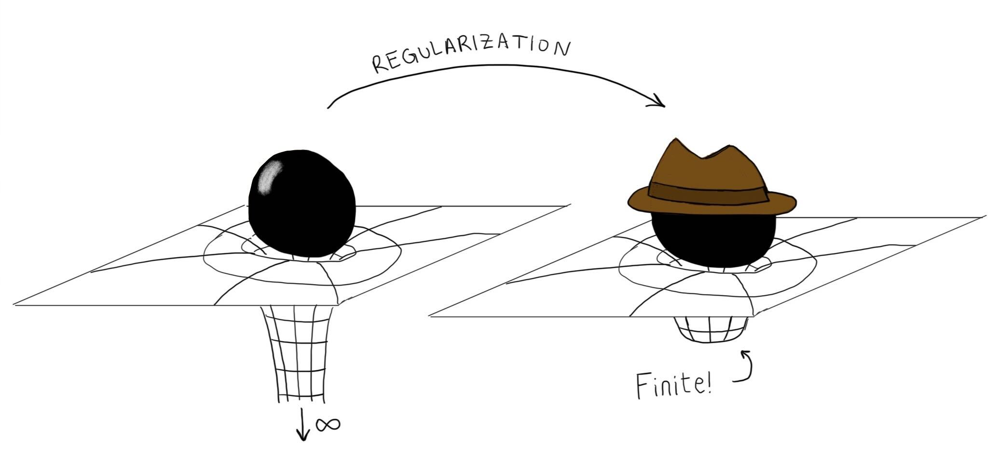

Regularization of self-fields

Compact objects, such as black holes and neutron stars, generate gravitational fields that influence not only their surroundings but also their own motion. This phenomenon, known as the gravitational self-force, is essential for accurately describing the evolution of binary systems. However, a major difficulty arises when these objects are approximated as point particles: their gravitational fields become singular precisely at the locations where we need to evaluate their effects. These divergences are mathematical artifacts of the idealized description, and a systematic procedure is needed to extract physically meaningful information from the fields.
In collaboration with Abraham Harte and Éanna Flanagan, I developed a framework for systematically regularizing these singular self-fields at arbitrary orders in perturbation theory. Our approach extends the usual treatment of the self-force to nonlinear interactions, providing a general method for isolating the physically relevant contributions to an object's motion.
Related paper: arXiv:2504.11912
Conservative and dissipative dynamics
in the presence of gravitational tails
Gravitational tail effects arise when radiation emitted by a binary system scatters off the curvature of spacetime and subsequently interacts with the system again. As a result, the dynamics retains a memory of its past evolution: the motion at any given instant depends not only on the current positions and momenta, but also on the system's history. This nonlocality challenges the usual phase-space description of the dynamics and complicates the distinction between conservative effects, which preserve energy, and dissipative effects, which carry it away through radiation.
In collaboration with Éanna Flanagan, I investigated how to recover a conventional Hamiltonian description in the presence of these effects. We showed that the conservative part of the leading-order self-force can be described by a Hamiltonian, despite its apparent dependence on the system's history. I subsequently developed a general framework that extends this result to arbitrary perturbative orders, showing how a broad class of nonlocal action principles can be reformulated in terms of local Hamiltonian dynamics. These results provide a systematic foundation for studying conservative binary dynamics in the presence of hereditary effects.
Related papers: arXiv:2205.01667 · arXiv:2302.10233 · arXiv:2406.00106 · arXiv:2605.14958
Finite-time evolution of binary systems
The motion of two objects orbiting each other is usually described by equations that tell us how their positions and momenta change at each instant. To determine their future evolution, we must solve these equations, typically by advancing the system through many small time steps. But what if, instead, we could describe how the system changes over an entire orbit, without having to follow every intermediate step?
The Magnusian provides a way to do precisely this. It is a mathematical object that captures the cumulative effect of the dynamics over a finite interval of time, allowing us to construct a map that takes a system directly from an initial configuration to a later one. In collaboration with Jan Steinhoff's group at the Albert Einstein Institute, I have been developing this framework for gravitationally interacting binary systems, extending it to include the loss of energy and angular momentum through gravitational radiation. This opens the possibility of describing the long-term evolution of binary systems through a sequence of orbital maps, while preserving important aspects of their underlying mathematical structure.
Related paper: arXiv:2607.24335